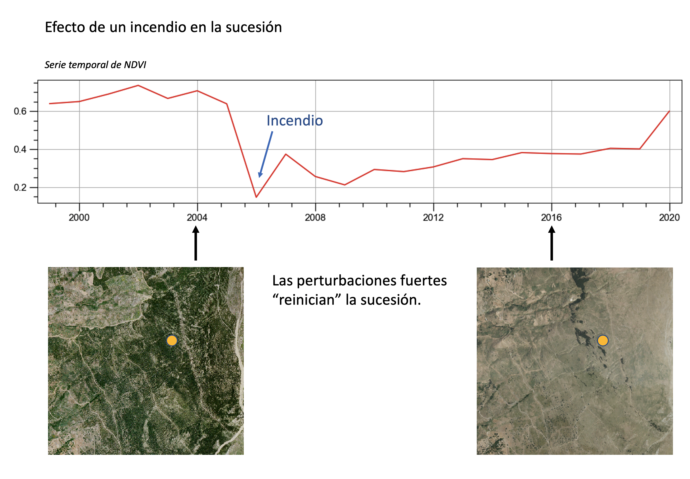

- Sucesión ecológica
- Definiciones
-
- Es la resultante de multitud de interacciones
- Dinámicas internas de las poblaciones.
- Relaciones interespecíficas.
- Interacciones de las especies con el medio abiótico.
- En realidad la sucesión es una propiedad emergente de las comunidades de seres vivos. Tiene multitud de implicaciones
- Direccionalidad
- Patrones de cambio y alternancia de especies.
- Optimización del aprovechamiento de energía solar y maximización del reciclaje de nutrientes.
- Es diferente (opuesto) al término zonificación: cambios en la estructura de la comunidad a través del paisaje.
-
- Conceptos clave para entender el proceso
- Serie
- Secuencia de comunidades que se van sucediendo con el tiempo.
- Cada comunidad reconocible como tal se denomina "estadio serial". Ej., pastizales -> matorrales -> bosque
- Series de vegetación
-
- Estadío final de la sucesión ecológica.
- Comunidad que "culmina" el proceso de sucesión.
- Se supone que está en equilibrio con su ambiente físico y biótico (al menos durante un intervalo de tiempo)
- Tiene una composición específica constante.
- Se autoperpetúa
- Idea propuesta por Clements (1916, 1936)
- Considera que la comunidad tiene un desarrollo ontológico equivalente al de los individuos.
- El clímax es el estado final de este proceso.
- Ejemplos
- Bosque maduro
- Arrecife de coral
- Tiene implicaciones importantes en la dinámica sucesional
- Direccionalidad
- Consideración de las comunidades no climácicas como "intermedias"
- Perturbación
- Conjunto de hechos que modifican el transcurrir natural de la sucesión.
- Provocan regresiones bruscas en la sucesión. Ej. incendios
- 
- O regresiones lentas. Ej. pastoreo,
- O su estancamiento. Ej. invasión de matorral.
- Origen de los cambios en las comunidades
- Alogénicos: Provocado por factores del medio físico.
- Meteorización del suelo por la lluvia
- Alternancia de temperaturas con el ciclo día-noche.
- Autogénicos: provocados por la actividad de los seres vivos.
- Perfil vertical de luz en un bosque.
- Cantidad de nutrientes en el suelo
- Humedad ambiental en un bosque
- Implicaciones de esto en la sucesión.
- En los primeros estadíos dominan los cambios alogénicos.
- Conforme avanza, son los cambios autogénicos los importantes.
-

- Ejemplos
- Modelos que explican el proceso de la sucesión
- Monoclimax (Clements)
- La comunidad es como un organismo altamente integrado. La sucesión es como su desarollo individual. Conduce a un estado "maduro" llamado clímax.
- Composición florística inicial (Egler)
- La primera especie que llega es la que condiciona la dinámica de la sucesión. El reemplazo de especies no es ordenado.
- Modelos integrados (Connell y Slatyer)
- Facilitación
- Las especies que llegan en primer lugar (pioneras) modifican el ambiente y lo hacen más adecuado para que lleguen otras.
-
- Inhibición
- Implica que hay fuertes interacciones competitivas. Ninguna especie domina sobre las demás.
- La primera especie en llegar impide que lleguen las otras.
- La modificación del hábitat lo hace menos adecuado para las especies de estados más avanzados de la sucesión.
- El reemplazo se produce cuando la especie dominante muere y su espacio es ocupado por otras. Esto suele ocurrir por factores externos.
- EJemplo: Colonización del ambiente intermareal por algas.
- Experimento en el que se dispusieron bloques de hormigón en la zona intermareal.
- Se comprobó cómo ocurrió la colonización

- Tolerancia
- La secuencia sucesional es predecible porque las distintas especies tienen diferentes estrategias para explotar recursos.
- Las especies más tardías no son inhibidas ni ayudadas por las pioneras. Son capaces de ocupar el espacio porque toleran un nivel más bajo de algunos recursos.
- Esto conduce a comunidades formadas por especies más eficientes en la explotación de los recursos disponibles.

-
- El proceso de la sucesión en términos de biomasa y energía
- Reciclaje de nutrientes y "manejo" de la energía
- Aumento del número de organismos con tasas de renovación lenta (ej. madera)
- Aumento de producción primaria
- Disminución de la tasa producción primaria / biomasa (productividad)
- Aumenta más la biomasa que la producción. El aumento de biomasa ocurre en partes no fotosintéticamente activas.
- Diversidad
- Al avanzar en la sucesión las comunidades adquieren una estructura más compleja.
- Se complican las redes tróficas y se alargan.
- Aumenta el número de relaciones interespecíficas.
- Se reduce la dominancia de especies
-
- Propiedad de los ecosistemas que consiste en su capacidad de mantener una condición interna adecuada para su subsistencia.
- Esto se traduce en que los estados finales de la sucesión tienen mecanismos para amortiguar los cambios del medio físico y mantenerse en condiciones cómodas para su automantenimiento.
- Temperatura
- Humedad
- Nivel de pH
- Síntesis
- Aspectos aplicados de la sucesión: restauración post-incendio
- Los incendios forestales son perturbaciones muy comunes en la región Mediterránea. Eliminan la biomasa del ecosistema y provocan una regresión a estados sucesionales anteriores al bosque.
-
- Evaluación de los daños
- Estudios de campo.
- Teledetección (NDVI, infrarrojos)
- Caracterización del terreno afectado
- Vegetación previa al incendio
- Vegetación posterior al incendio
- Relieve
- Clima
- Planificación de actuaciones de emergencia para minimizar la pérdida de suelo.
- Modelización de la erosión potencial
- Obras de estabilización de laderas (fajinas, albarradas)
- Diques en cauces
- Apeo, retirada y/o trituración de los árboles quemados
- Diseño del plan de restauración
- Zonificación de las actuaciones
- Definición del estado final deseable
- Ejecución del plan de restauración con técnicas que "aceleran" la sucesión
- Creación de microcuencas que captan agua y la dirigen hacia los individuos plantados.
- Creación de núcleos de dispersión mediante plantaciones en sitios estratégicos. Estos núcleos suministrarán propágulos para fomentar la regeneración de la zona quemada.